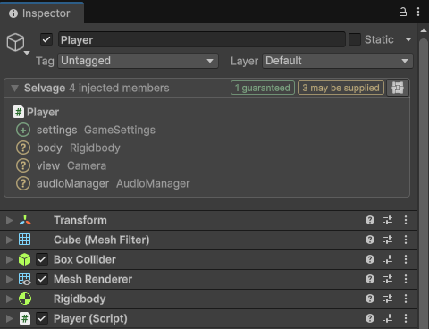
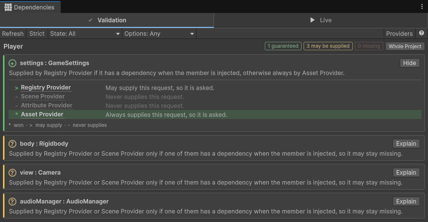
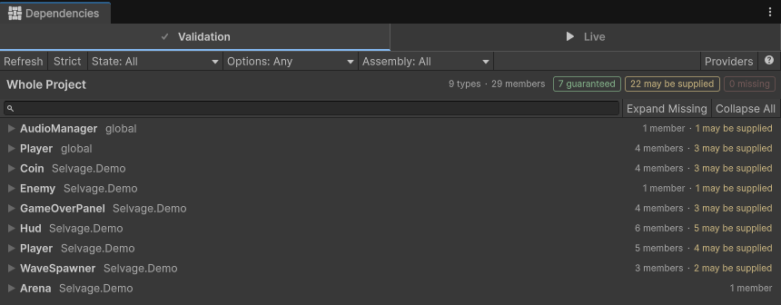

Validate members
Validate a GameObject or an asset
When a GameObject or an asset has scripts with injected members, its Inspector window displays a
Selvage section at the top, with the number of members in each state. Select the section to expand
it: it lists the members of each script, with the state of each member and its type, then the static members of its
class, marked static. To list only the members in one state, select its count. Select several
counts to combine them. The check reads your code and the provider list, and doesn't run your code, so you find a
missing dependency in the Editor instead of as a null at runtime.

| Result | Meaning |
|---|---|
| Guaranteed | A provider always gives the member a dependency. |
| May Be Supplied | A provider can give one, but whether it does is only known when the member is injected. |
| Missing | No provider can give the member a dependency. To fix it, add a provider for the type, or make the member Optional. |
In Play mode, and while editing for a member with the EditMode
option, the section displays the state of each member and the provider that gave its dependency. For more
information, refer to Inspect injected members.
Read the reason for a result
The Validation tab of the Dependencies window lists each member with its result and the reason for it. To open it on a GameObject or an asset, select the Selvage button at the right of its Selvage section, then select Validation. To validate a script, perform the following steps:
- Go to Tools > Selvage > Dependencies.
- Select Validation.
- In the Project window, select the script.
The window follows the selection while it is open.

A row also indicates when the member needs the Async option, when
its provider can revoke its dependency, and when the member is part of a dependency
cycle or leads into one.
Find out where a dependency comes from
When a member receives an object you didn't expect, select Explain on its row. The explanation lists the providers in the order Selvage tries them, highlights the provider that gives the dependency, and indicates why each provider above it didn't. To have another provider give the dependency, move it up in the provider list.

Validate the whole project
To validate every class in the project that has injected members, select nothing, or select Whole Project. The tab lists the classes with a Missing member first, and counts the members in each state, as it does for a selection. The check covers the assemblies of your project and the Selvage demo, and skips the assemblies of Selvage itself and of Unity. It runs a little every frame, so the Editor stays usable while it runs, and stops when you cancel it. To validate only the scripts of a folder, select the folder in the Project window.

To list only some members, use the State and Options filters in the toolbar. For a description of each control, refer to Dependencies window reference.
Validate when you build or enter Play mode
The same check can run when you build and when you enter Play mode. To set it up, perform the following steps:
- Go to Edit > Project Settings > Selvage.
- In the Validation section, set Build Validation and Play Validation to Off, Warn or Block.
By default, a build with a Missing member is blocked, and entering Play mode isn't checked. When entering Play mode is blocked, select Show in Dependencies to list the members that blocked it. For more information, refer to Project Settings reference.